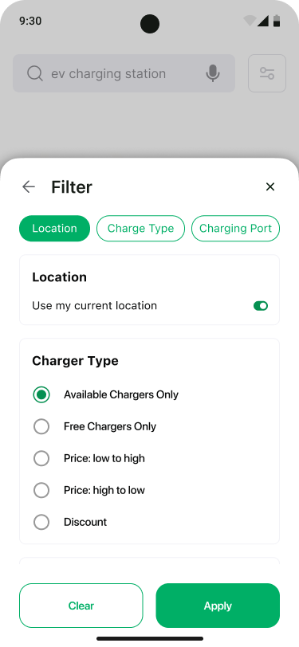

Find nearby stations
Use location, search and map context to surface relevant charging stations.
Designing a mobile experience that helps EV drivers discover charging stations, evaluate availability, plan a route, book a charging slot and manage the journey.

Finding a charging station is only one part of the EV journey. The user also needs confidence that the station is relevant, available, compatible and reachable before committing to a charging session.
The supplied screens show a connected experience across station discovery, filtering, station details, route planning, booking, payment and booking history. The design opportunity is to connect these moments into one understandable journey.
Use location, search and map context to surface relevant charging stations.
See availability, charger type, charging points, amenities and ratings.
Move from a station decision into a navigable trip with route context.
Reserve a slot, apply a coupon, pay and retain the booking for later management.
The screens reveal a product that supports both quick discovery and deliberate planning.
Establish the driver's current context.
Search nearby or enter a location.
Charger type, charging point and availability.
Station details, amenities, ratings and reviews.
Turn the chosen station into a route.
Reserve, pay and manage the session.

The home experience combines a searchable station list, map context and visible availability so the user can move from “where?” to “which one?” quickly.


Map and list views work together so station discovery is grounded in the driver's location.
UI consequence: Search results retain distance, availability and station-level information.
Charger type, charging point and availability can change whether a station is useful.
UI consequence: Filtering becomes a direct discovery tool rather than a secondary settings layer.
The station detail experience brings together information that helps the driver decide whether to reserve or navigate to the station.


The key transition is from a map marker to a trusted choice: availability, charger information, amenities and reviews give the station enough context to become actionable.
Trip Planner extends the experience from station discovery into navigation, showing route context and journey progress.


Discovery and navigation use the same mental model: choose a charging point, understand the route, then continue the journey with confidence.
The supplied flows include slot booking, coupons, payment confirmation and booking history. Together they form the transactional layer of the experience.
Select a charging time.
Use a discount before payment.
Make the booking commitment explicit.
Complete the transaction.
Keep the booking visible.
History provides a path back.


My Bookings gives the user a persistent place to see ongoing, booked and historical charging sessions.


Across the supplied screens, recurring patterns connect discovery, transaction and navigation into a single product language.
Primary actions and positive charging states use a recognizable green visual signal.
Availability, distance, rating and charger details create a repeatable decision unit.
Spatial context and scannable station information work as complementary views.
Discovery, planning, booking, payment and history share the same product model.
The supplied design set demonstrates a complete EV charging product journey, from first-run onboarding to station discovery, navigation, booking and post-booking management.
My product-design focus was on connecting the moments that matter to an EV driver: discovering the right station, understanding whether it fits the journey, planning the route, reserving a slot and managing the booking.
Design contribution
The product becomes more useful when charging is treated as part of the journey—not as a destination search in isolation.